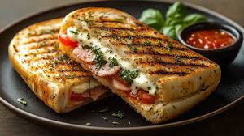

Homepage
Fancy Grilled Cheese

Grilled cheese is a classic American dish, acceptable for any time of the day, and very easy to make.
Despite it's ease, you can make it as simple or as complex as you want. Adding ingredients, changing cook times,
and making your own perfect cut are all fair game.
The grilled cheese sandwich gained major popularity during the great depression, where cheap and affordable meals
were a must. It's often served with tomato soup, another food item that's really easy to get your hands on and serve.
This recipe will be a bit more complex: pesto and tomato to show how versatile the classic grilled cheese can really
be.
Ingredients
- Butter - 1 tbsp
- Bread - 2 slices
- Pesto sauce - 1 tbsp
- Provolone Cheese - 1 slice
- Tomato - 2 slices
- American Cheese - 1 slice
Steps
- Spread butter on one side of a slice of bread and place it, buttered side down,
into a nonstick skillet over medium heat.
- Spread 1/2 of the pesto sauce on the unbuttered side of the bread. Stack provolone cheese,
tomato, and American cheese on top of pesto, in that order.
- Spread remaining pesto sauce on second slice of bread. Place it pesto side down onto
sandwich in the pan. Butter the top side of bread.
- Gently fry sandwich, flipping once, until both sides are golden brown and cheese has melted,
about 5 minutes per side.